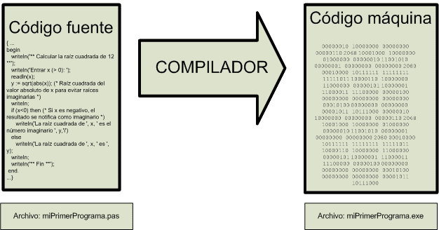

Clase # 1
Interpretes y compiladores
Los programas escritos en lenguajes de programación de alto nivel, son códigos que respetan una sintaxis especifica.
Dicha sintaxis, está diseñada para poder ser «legible» y «comprensible» por los programadores, es decir por los humanos.
Ahora bien, esa misma sintaxis no puede ser comprendida por los procesadores de las computadores actuales, porque estos últimos solamente pueden «leer y ejecutar» instrucciones escritas en código maquina.
Se hace evidente entonces, la necesidad de «traducir» el código escrito en lenguaje de alto nivel, a un código escrito en lenguaje maquina.
Aquí es donde intervienen los traductores, y básicamente existen dos tipos:
1) Los traductores simultáneos o sincrónicos, que van traduciendo instrucción por instrucción a medida que la leen del programa, y se la van enviando al procesador de la computadora para que la ejecute. Si queres pensar un caso de la vida real, serian como los traductores que asisten a los disertantes en los congresos internacionales, donde cada orador usa su propio lenguaje nativo, y cada oyente recibe por sus auriculares la «traducción simultanea» que le hace su traductor. En programación este tipo de traductor se llama interprete.
Un interprete va leyendo el archivo de código en lenguaje de alto nivel de a una instrucción por vez, luego la traduce a código maquina y finalmente la envía al procesador de la computadora para ser ejecutada.
Ejemplos de lenguajes «interpretados» son BASIC, PHP, JavaScript, Python, Ruby, y otros.
2) Los traductores por lote o asincrónicos, que traducen todo el código completo de un programa y lo guardan en otro archivo de código ejecutable.
Posteriormente dicho archivo ejecutable puede ser enviado por el usuario hacia el procesador, para ser ejecutado.
Un ejemplo de este tipo de traductor en la vida real seria el traductor de libros, que traducen el texto original de una obra completa de un idioma a otro, y producen un «nuevo texto» que queda disponible para los lectores del segundo idioma.
En programación este tipo de traductor se llama compilador.
Un compilador va leyendo el archivo de código en lenguaje de alto nivel de a una instrucción por vez, luego la traduce a código maquina y finalmente la escribe en un segundo archivo ejecutable. El archivo con todas las instrucciones traducidas queda disponible para su posterior ejecución.
Ejemplos de lenguajes «compilados» son C/C++, Visual BASIC, Cobol, Pascal y otros.
Existen además, algunos lenguajes que se traducen de forma «hibrida», es decir que tienen una pre-compilación completa a un archivo de código intermedio (llamado bytecode).
Cuando se quiere ejecutar este código, es interpretado en forma simultanea por otro programa llamado «maquina virtual» que le envía de a una instrucción a la vez al procesador de la computadora.
Ejemplo clásico de este tipo de lenguaje es Java.
Ventajas y desventajas de cada tipo de traducción del código
Si vemos el aspecto de la facilidad de corrección de un proyecto de programación, el lenguaje interpretado tiene la ventaja de que se pueden introducir cambios y probarlos en tiempos mínimos, ya que no es necesario traducir por completo el programa con cada cambio. Trabajar con lenguajes interpretados, en general facilita las tareas de depuración y modificación del código.
Si vemos el aspecto de la velocidad de ejecución y la performance de los programas, el lenguaje compilado lleva obviamente la ventaja, porque una vez que se genera el código ejecutable final ya no es necesario perder tiempo en traducir mientras se ejecuta. Trabajar con lenguajes compilados, en general produce códigos mucho mas rápidos.
interprete
Última modificación: martes, 24 de agosto de 2021, 13:16
ACTIVIDAD ANTERIOR
◄ El lenguaje de programación PythonACTIVIDAD SIGUIENTE
Interprete e IDE para Python ►